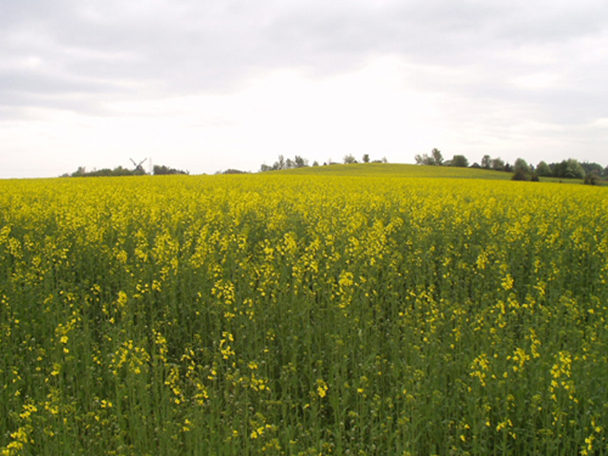
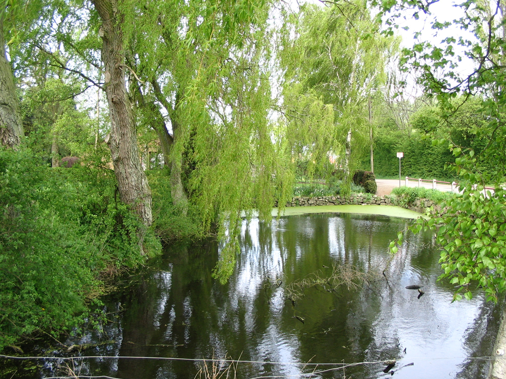
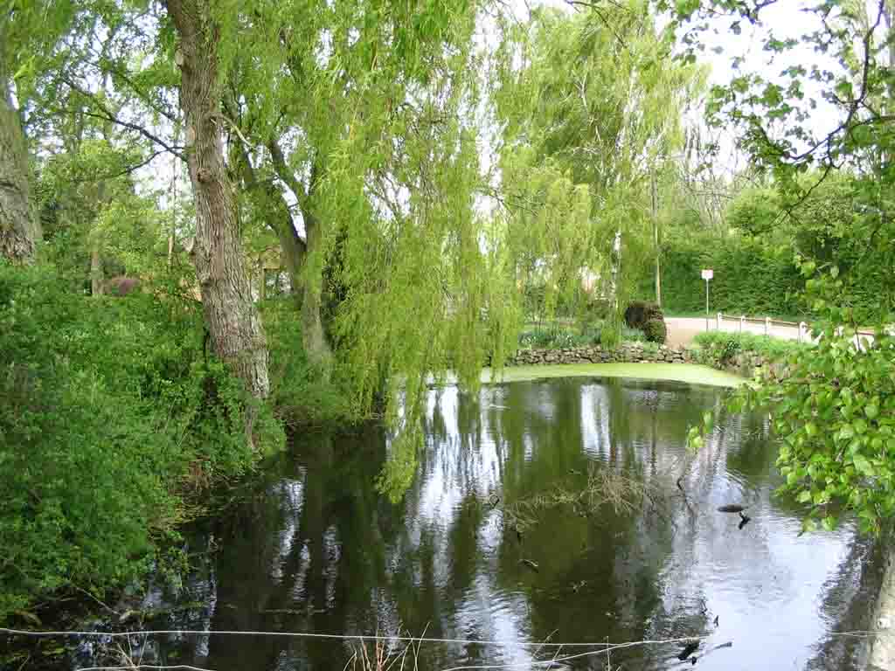

Forside
Introduktion
Valg af
Anvendelse
Motiver

Billeder med høj detaljegrad
Her kan du se hvordan du kan indstille dit digitalkamera i en række normale motiver. Du vil også kunne se hvilken effekt opløsning og kvalitet helt præcist har på motiverne.
Opløsning
|
fig. 5, mark 1024x768 |
 fig. 6, mark 640x480 |
{kind=link}
{kind=link}
På billederne ovenfor ser du en mark taget med to forskellige opløsninger. For bedre at kunne sammenligne dem, er fig. 6 forstørret op til samme størrelse som fig. 5. De to billeder er et godt eksempel på, hvor meget opløsning kan betyde.
Marken er meget detaljeret, med mange farveforskelle mellem blomsterne, himmelen og træerne, så for at kunne skelende imellem hver enkelt pixel, skal der bruges en stor opløsning. Fig. 5 som er taget med den højeste opløsning er blevet ganske flot, men ikke engang en opløsning på 1024x768 er nok til at få hvert enkelt korn helt skarpt. På fig. 6 kan man ikke skelne kornene fra hinanden, marken bliver et stort gult "tæppe".
Det skal bemærkes at hvis man formindsker de to billeder ned til 640x480, det kunne for eksempel være tilfældet hvis billedet skulle bruge på en hjemmeside, er de to billeder helt ens.
Komprimering
|
 fig. 7, gadekær v./lav kompression |
 fig. 8, gadekær v./høj kompression |
{kind=link}
{kind=link}
Her har vi taget et billede af et gadekær. Dette motiv er ligeledes meget detaljeret, specielt er vandoverfladen og bladene på træerne meget fint defineret. Når vi komprimerer dette billede (fig. 8), bliver der nemt dannet "blokke" i billedet. Det ses tydeligst på vandoverfladen, hvor spejlbilledet bliver utydeligt. Dog er kvaliteten på det komprimerede billede stadigvæk er ganske god, i den forstand, at det stadig er klart hvad det forestiller. Her bliver det derfor vigtigt hvad man skal bruge billedet til. Billedet er godt nok til en computerskærm, men vil formentlig ikke gøre sig godt udskrevet til et fotoalbum. Det er dog værd at bemærke at fig. 8 fylder en tiendedel af fig. 7.
Når motivet er meget detaljeret, som ved ovenstående eksempler, kan man ikke reducere billedets størrelse i hukommelsen meget. Opløsningen bliver nødt til at være høj, og kvalitet bliver som minimum nødt til at være medium. Her må man altså afgøre på forhånd, hvilket formål billedet skal bruges til.
« Tilbage | Næste: billeder med lav detaljegrad »
Termer brugt på denne side:DetaljegradBilledstørrelse |
Til top |